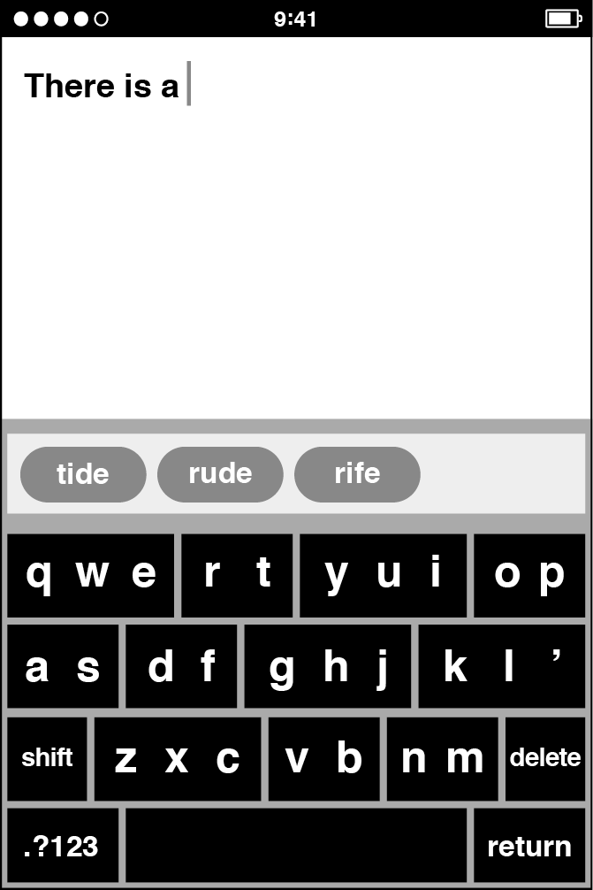
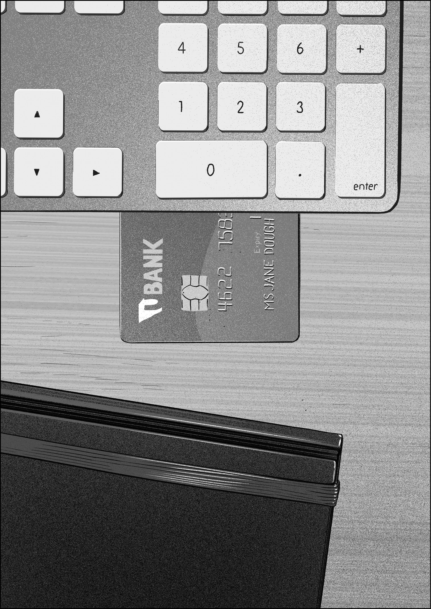
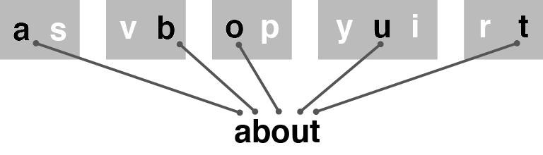
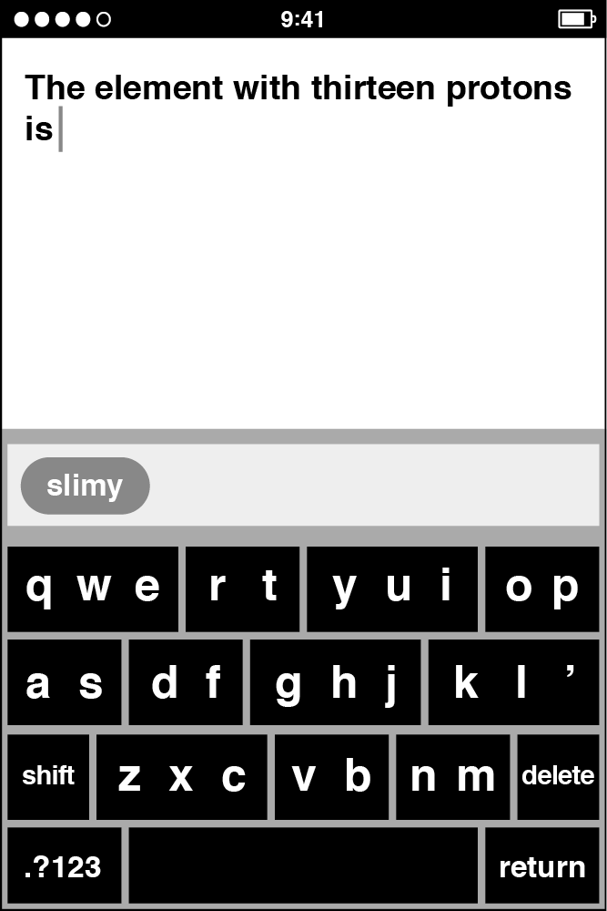
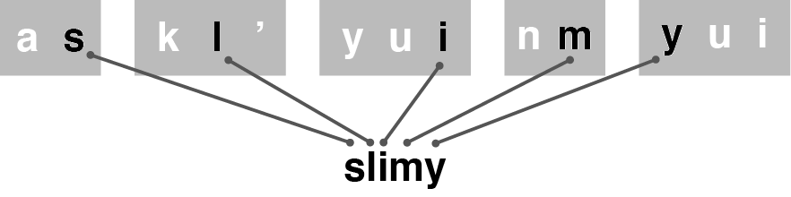
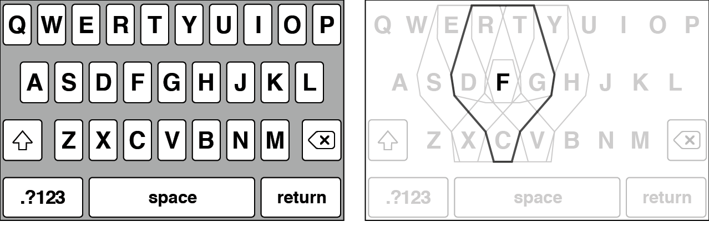
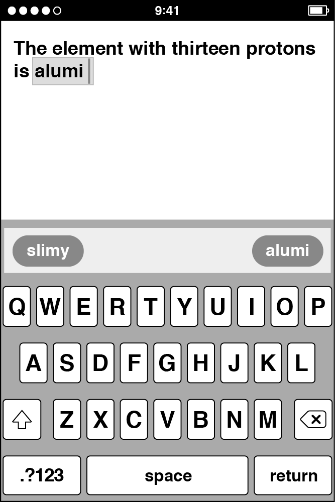
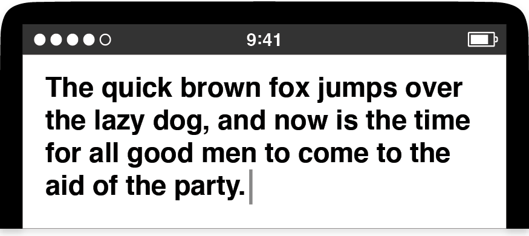
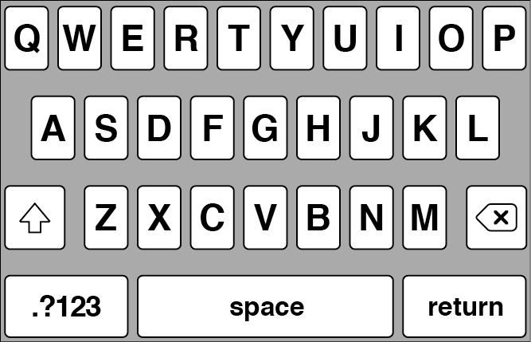

If you’ve ever owned an iPhone, you know that the keyboard I presented during the demo derby does not look or work like the one that appeared on the product that shipped. What happened?
To begin with, everyone else went back to their pre-derby programming tasks, and all the responsibility for developing the keyboard, which had been shared collectively among the Purple software team for a few weeks, landed squarely in my lap.
As the new keyboard DRI, I had plenty of questions to answer. Would my derby-winning keyboard be good enough as it was? Would I be able to improve it? Would I be able to develop a dictionary that always suggested the right word? Would people like it, or at least stick with it long enough to decide if they liked it?
Finding the answers became a balancing act among craft, taste, and empathy—developing touchscreen text entry technology that was efficient, likable, and intuitive. All along, I worried that my keyboard had product-killing potential. Indeed, there was a well-known precedent in Apple’s own history.
Apple once made a product that was torpedoed by its poor text entry technology—the Newton, the handheld personal digital assistant the company created in the 1990s. The Newton was groundbreaking in concept and form factor, but it was sunk by its problematic handwriting recognition.1
While the Newton was also hampered by its lack of connectivity, a dearth of compelling use cases, and the absence of a killer app—a program so good that people would buy the device just so they could use it—none of that matters. The substandard speed and accuracy of the Newton’s stylus-based text entry drowns out all other memories of the product. The Newton stylus could have joined the Mac mouse and the iPod click wheel as a landmark in computer input methods, but it didn’t.
A few people on the Purple project, including Greg Christie, had worked on the Newton, and they were all too aware of why the Apple PDA failed. To them, my keyboard seemed like a chance for history to repeat itself. Every bug or deficiency in my keyboard prompted one of them to invoke the Newton, and in the Keynote slide decks Henri periodically prepared for Scott to give him a progress update on our biggest software risks for Purple, I quickly got used to the keyboard showing up on the first slide, always near the top.
To succeed where the Newton didn’t, I would need to do more than solve the next technical problem. It wouldn’t merely be a matter of coding craft. The keyboard was different. None of us knew how a touchscreen keyboard was supposed to work. I had to constantly ask myself whether what seemed like a good solution to me was actually a good solution. I didn’t know. Typing on a small sheet of glass was new.
Within a week of picking my keyboard, Scott scheduled a private demo with Phil Schiller, Apple’s top marketing executive, the man who, after Steve, was most responsible for communicating to prospective customers exactly why we thought our products were great and why they should go out and buy one.
Scott didn’t clue me in on the politics in play between him and Phil or why he had scheduled the demo. I imagined that Scott was eager to show off the results of the keyboard derby, which must have been a topic for discussion up at the executive level. In any case, my job was to prepare my demo so it worked as it did for the demo derby, so that’s what I did.
When Scott brought Phil to the conference room, I was waiting. This was the first time I ever met Phil, and I was nervous. I set everything up as I had a few days earlier, but I had already made a couple of changes to the keyboard user interface. Scott introduced me. Phil greeted me with a quick courtesy that showed he wanted to get right down to business.
He picked up the Wallaby and tapped a few times. I didn’t see what he typed. Phil asked me why I’d put more than one letter on every key. He was pleasant but direct. He seemed to think that my keyboard looked odd, that it required an explanation.
I tried to give him one. I told him about our decisions to make big keys that were easy to target and couple them with suggestions from a dictionary.
Phil wasn’t satisfied, and he said so. Then that was it. I was surprised we were done so fast. The demo was over in about two minutes.
It was sobering to hear Phil’s point of view. Obviously, he had none of the emotional connection I had to my keyboard. While I had been working hard on it, for Phil it was brand new, and he was indifferent to it. He expected the software to win him over, and apparently, it didn’t. This mattered for two reasons. First, as I said, Phil would be playing a pivotal role in pitching the Purple phone to people in the outside world once we were done developing it. Second, and perhaps more important, his reaction was just like a prospective customer evaluating a product from scratch. My keyboard would be a part of the overall impression, and Phil was confused rather than convinced.

The derby-winning keyboard with some modifications to make it more full-featured. The shift and delete keys made way for a return key and a key to display numbers and punctuation.
A couple days later, Scott and I repeated the demo performance for Tony Fadell, the executive in charge of the iPod division. I had never met Tony before either, but I didn’t have to know him to see how preoccupied he was. When he walked over to the conference room table with my demo on it, he barely glanced at my keyboard. He didn’t ask any questions. Then he tried my software, but he couldn’t have typed more than a word or two. The demo with him was even shorter than the one for Phil, and within a minute, he and Scott went off together for a private meeting, leaving me alone in the conference room to clean up the Mac, the Wallaby, and the wires connecting them.
Two demos with less-than-positive responses. Add that to my fellow derby entrants’ lack of excitement, and I could tell we didn’t yet have exactly the right solution. I didn’t get to demo the software for Steve. Maybe Scott concluded that we weren’t ready for the big time, but he never said anything specific to me about these executive demos, good or bad.
I didn’t feel like I had let Scott down. There were no bad bugs during these executive demos. As I tried to interpret the feedback and decide what to do next, I thought back to the Black Slab Encounter with Safari. That breakthrough didn’t represent an end; it signaled a beginning. As exciting as it was to see our web browser render the first sliver of a web page, we realized what the milestone meant. I began to look at my derby-winning design in a similar way, as if it were a successful audition rather than a sold-out performance.
I started to think about improvements, and to help me keep my keyboard goal literally in sight as I sat in my office, I measured and cut out a small piece of paper, about 2 inches wide by 1.3 inches tall, a little smaller than half the size of a credit card turned on end. I pinned up this little slip of paper on the bulletin board next to my desk. I looked at it often. This was all the screen real estate I had available for my keyboard. This was my touchscreen typing canvas. People would have to tap-tap-tap in that tiny rectangle to type, and I had to figure out how to make that happen. As I pondered that small shape and took stock of my software, I got accustomed to the idea that I might need to rethink some of the decisions that led to the derby-winning design, perhaps all of them.

Weeks went by, and I made demo after demo, trying new ideas to improve the typing experience. I added more words to the dictionary. I experimented with displaying the top word suggestion on the space bar as an extra hint that it was the word the software would enter if you typed a space. Since Richard Williamson’s office was right next to mine, I often poked my head around his door, called him into my office, and invited him to pick up the Wallaby so he could try my latest ideas. He always gave specific feedback. More words in the dictionary—good. Word hint on the space bar—not so good.
This kind of collaboration was common. The programmers and designers on the Purple project were in and out of each other’s offices all the time. We exchanged frequent feedback on our work, and all of us were expected to field questions on our specific area of development. If the developer of the Contacts app had a suggestion or comment about using the keyboard to type a person’s first or last name into the appropriate field on a contact card, I was the one to ask about it. As it turned out, this exact task, typing people’s names, proved to be a stumbling block for the derby-winning keyboard.
Consider what it would be like to type a word on a keyboard where there were multiple letters on every key. Typing a key made all the letters on that key a possible choice for that position in the word. Tapping the as key made it just as likely you meant to type a word that began with “a” or “s.” As you typed more keys and then tapped space, the software would offer the best word for all the keys you typed by selecting the best letter for each position.
Type these five keys ...

... and the keyboard could figure out you meant to type “about.”
This scheme worked well for common words, and every new word I added to the dictionary made it work even better.
Typing people’s names was another matter. What if you had a friend named Teemu? Since I never added dictionary entries for popular given names for men from Finland, typing his name was impossible. My keyboard had no trouble with finding paths for ordinary English words, but the software couldn’t find a path through a succession of keys for a name like Teemu, since his name wasn’t in the dictionary.
If you typed these five keys for the name “Teemu,” you were out of luck. Since this name wasn’t in the dictionary, the keyboard couldn’t match it.
The problem for uncommon words was similar. What if you wanted to type a gibberish word on purpose? This happens much more than you might think. Every year, September 19 is International Talk Like a Pirate Day.2 On this humorous holiday, people want to type one word above all others: Arrr! Of course. But how do you spell it: Arr? Arrrr? Aarrrr? Aarrrrr? To make it easy and convenient for people to type like a pirate, I would have to add every one of these “Arrr!” permutations to the dictionary, since the keyboard wasn’t “smart” in any way. It didn’t have any built-in knowledge of English. It couldn’t make inferences or sound things out. The keyboard could suggest a word only if the dictionary contained an exact entry for that word.
How could I help people type Finnish names and onomatopoeia? I didn’t know. Could I add all the names for all the world’s languages, and if I did, could I reliably differentiate between a misspelled word and an uncommon name? I doubted it. Could I anticipate every bit of humorous babble people might want to type? Fuhgettaboutit.
These problems illustrate a common product development quandary. People who love tech gadgets want new products that do cool new things. This creates the customer demand that gives product developers like me incentive to add new features. Yet none of us wants these products and features to be confusing, to lead us astray, to drive us down a software dead end and dump us there. We’ve all owned devices that had too many ill-considered, overlapping, and inscrutable features, making the products nearly impossible to understand or use. Apple’s whole identity was bound up in not having this problem.
Over time, I came to the conclusion that designing an excellent user experience was as much about preventing negative experiences as facilitating positive ones. It couldn’t be an even trade-off either. Great products make people happy almost all the time and do the opposite rarely, if at all. This worried me because, as matters stood, my derby-winning keyboard might wipe the smile off someone’s face on International Talk Like a Pirate Day. On that holiday, my keyboard had to deliver on Arrr!, not cause people to give up in frustration, exclaiming “Argh!”
But before I could figure out how to type personal names or keyboard like a pirate, a more serious problem came up. As my teammates on the Purple project used my keyboard in their daily routine in the months following the demo derby, they found they were getting confused in the midst of the tapping through words letter by letter. Something was obstructing the customary thinking and typing process. My teammates reported how they would start to type a word but then lose track of their progress somewhere in the middle. I had no idea what the problem was or why it seemed to happen much more with my keyboard than it did on a desktop or laptop computer. When this newfound touchscreen keyboard confusion struck, the remedy was to stop, delete a partially typed word, and then retype it again from the beginning. Once it became clear to me how frequently my colleagues were doing this, I stopped fretting about typing “Teemu” and “Arrr!” so I could investigate why my teammates were getting lost. After a little study, I figured out what was going on.
The derby winner suggested only those words with the exact number of letters you’d typed. My dictionary lookup software didn’t predict longer words. From today’s perspective, this seems like a huge limitation, but again, we were making it up as we went along. We were in the equivalent of the touchscreen-typing Stone Age. We were making new discoveries all the time about how a touchscreen keyboard should work, and as it turned out, this stop-delete-retype problem was a significant finding about the implications of putting multiple letters on a single key.
Here’s an example. I start typing the word “aluminum” but then get distracted momentarily—perhaps a colleague invites me to get a cup of coffee. Let’s say I typed five letters before my attention was diverted. When I want to refocus and continue typing, I have to ask myself “Where am I? What letter comes next?” I look up to the suggestion bar, the narrow rectangle situated directly above the keyboard that displayed candidates from the dictionary, hoping for some assistance. The software offers me a word: slimy.


When I typed five keys, the derby-winning keyboard suggested words of five letters. If I started to type “aluminum,” but then got distracted after tapping five keys, it was difficult to get started again.

Can you think of the sixth letter in “aluminum” without counting? It’s easier to delete and retype. Unfortunately, the best five-letter word for these letters is “slimy.”
This is unhelpful, but slimy is actually the best five-letter word in the dictionary for the first five keys I had to type on the derby winner to enter “aluminum.” This wasn’t a bug. Not only that, the keyboard gave no hint about what letter I should tap next to get the word I wanted. I might want to resume my typing to finish the word “aluminum,” but it was difficult to figure out how to pick back up where I’d left off. What’s the sixth letter of “aluminum”? This is a surprisingly tough question, and with the keyboard suggesting an unrelated word, it was easier to delete the partial word and start again. I wanted “aluminum,” but I got slimy. Technological tragicomedy.
There was no obvious solution to this problem, and with this latest difficulty, the issues with the derby-winning keyboard were piling up:
- We couldn’t type uncommon personal names like “Teemu.”
- We couldn’t type uncommon words like “Arrr!”
- We were getting lost while typing—the “Where am I?” problem.
Every day, my teammates were updating to the latest keyboard software, loading it onto their Wallaby prototype devices, and trying it out. There’s a common high-tech term for a daily regimen of using and evaluating your own product while you’re trying to develop it: dogfooding. I never liked this term myself, and it didn’t appeal to Apple sensibilities either. Pet food isn’t typically thought of as a pinnacle of product development. On the Purple hallway, we were trying to make excellent products for people, and while we sometimes said “dogfooding” inside Apple, more often, and more officially, we began to say “living on” to describe the day-to-day routine of living on our in-progress software like it was a real product.
The living-on experience with my derby-winning keyboard was a mixed bag. It was working well enough for typing messages and emails using common words, but the drawbacks were too big to ignore, and on my own, I was struggling to find fixes for the problems on my list.
In early 2006, about three months after the keyboard derby, a dozen of us met in the Between conference room to review our overall progress with Scott Forstall and several programmers and managers. Greg Christie was there as well, along with a few designers from his HI team. Scott was trying some typical living-on experiences with the Purple software, Wallaby in hand, and he was typing. We weren’t focused on the keyboard specifically, but then Scott got lost in the middle of typing a medium-length word: national.
After tapping four keys, nm as rt yui, Scott looked up and saw Mary in the suggestion bar, and he got a little thrown off, but he recovered enough to type the next key, op. But when he peeked at the suggestion bar again, he saw Mario. Now he was totally lost. He had no idea what to type next. Scott ran smack into the “Where am I?” problem. He told me how he felt the only way to wind up with the word he wanted was to stop, delete, and retype. Others chimed in, and of course, I had already heard this kind of feedback. Now that we were together, we started digging into the problem as a group.
I stepped up to the whiteboard and drew diagrams that showed how trying to type the word “national” might produce suggestions of Mary and Mario in the midst of typing. I explained why that made sense. Before long I was describing the two other main problems with the derby-winning design. I mentioned that, while Mary and Mario were the unwanted distractions on the way to typing “national,” typing a less common name, like “Teemu,” could be impossible since the name wasn’t in the dictionary. I gave my opinion that we would never be able to add dictionary entries for all the names for all the people of the world. I also went over the difficulty of typing “Arrr!” and how we would never be able to add dictionary entries for all the reasonably sensible gibberish people might want to type.
After describing these problems, I backed up a bit to review the four basic concepts of the derby-winning keyboard:
- Big keys with multiple letters per key
- A QWERTY arrangement
- Every gesture was a tap
- A dictionary provided active assistance
I suggested that there was something not quite right about these principles as a summed total. As we got more experience living on a keyboard based on these ideas, we kept tripping over ourselves as we tried to type. The derby winner was good at typing common short words but ran into trouble with people’s names, uncommon words, and long words. Something had to be done, but I didn’t know what.
By now I had been up at the whiteboard for about ten or fifteen minutes, and I had totally derailed the demo. This meeting wasn’t supposed to be a keyboard deep-dive session, but it was now. Marker in hand, I sketched more big keys with multiple letters on them, more examples of letter combinations, and more diagrams of the most sensible word paths through typical sets of typed keys. I really didn’t know what else to do, so I just spilled everything I knew about the problems with the keyboard as best I could.
Greg Christie broke the logjam. He decided that he’d seen enough of my drawings. He had heard enough of my explanations. He wanted to return to the other demos we had been reviewing. To him, the design solution was simple. So he hollered at me, much like a New Yorker trying to get the attention of a roving hotdog vendor at a crowded baseball game, “Aww . . . come on, Ken! Can’t you just put one letter on every key?”
Greg got my attention all right, and it wasn’t just his brusque manner. Since I grew up in the New York area myself, I could look past his direct East Coast communication style more easily than some of my teammates. Greg never sugarcoated his comments. If he thought a feature was no good, he told you. But when Greg gave feedback, I always listened for a hint of exasperation, as if what he was saying were obvious. If he had that tetchy tinge in his voice, it meant he was confident. I was still standing at the whiteboard with marker in hand when Greg spoke up, and it sounded to me like he was awfully sure of himself.
I thought quickly about what he’d said. He wanted me to change the keyboard to a design that had one letter on every key. I looked back at my sketches of big keys with multiple letters on them. I got an idea. I told Greg, “Yeah, maybe there’s something I can do.”
When I thought more after the demo broke up, Greg’s reasoning became clear to me. As he listened to me describe the four basics of my derby-winning keyboard—big keys with multiple letters per key, QWERTY arrangement, tap gestures, dictionary assistance—Greg realized the weak link in the chain was the first of them. He zeroed in on having multiple letters per key. He thought that was the design decision holding back progress. That was the root problem. His proposal was to change back to a small-key design with only one letter on each key. Of course, it was easy enough for Greg to say that, once he had the insight to think it, but I doubt he had the slightest idea how it might be accomplished in software.
But with the keyboard development experience I’d accumulated thus far, maybe I did. Within a day or two, I had a plan and some code to back it up. Just as Greg had suggested, I went back to small keys with just one letter per key. I had been working for months on the QWERTY layout, tap to type, and the word-matching dictionary. With these three technologies combined, I had a better shot at making smaller keys work.
The other difference came from the idea I had while standing at the whiteboard in the conference room. On a conceptual level, it was about designing the keyboard as a means for people to communicate their intent to the device and structuring the software so it could understand that intent. This is an important concept for touchscreen user interfaces, and I’ll return to discuss this notion—interpreting what people mean given what they do—more fully in the next chapter. To capitalize on Greg’s single-letter-per-key suggestion, I got the idea that the person typing and the autocorrection code didn’t have to see the keyboard the same way. On the derby-winning keyboard, they did—the groupings of multiple letters were fixed both for the typist and for the software. For example, the letters QWE were always together. In my new, Greg-inspired layout, each letter appeared by itself on a key but was given a new set of neighbors as far as the autocorrection code was concerned. For example, the letter F was no longer locked in a DF set. For the person typing, there was a clearly defined F key, but the autocorrection code saw F as part of a custom group, FDGRTC, with F in the center and all its neighbors to the left and right, above and below. The keys actually got bigger from the autocorrection standpoint, even though visually they appeared smaller to the typist.
Once I banished the hardwired key groupings, the design choice Phil Schiller didn’t like, I had something that looked more like a standard QWERTY keyboard.

For the typist, all the keys shrank in size, as compared to the derby-winning keyboard, as shown on the left. The autocorrection software saw the F key as much larger, as shown on the right, since typing in the area of D, G, R, T, or C might result in autocorrection choosing an F, but it also might result in choosing one of those other letters. All keys were similarly enlarged from the autocorrection point of view, and the keys neighboring F are shown to illustrate the overlaps. It was up to the autocorrection code to figure out which letters on these enlarged keys you really meant.
This was another important step in the development of the keyboard and the solution to my lingering problems. Single-letter keys provided the escape hatch for typing names and uncommon words. Since you could target an individual letter, you could type whatever word you wanted. Even if you needed to be extra careful, you could slow down your typing and give extra attention to the keys as they popped up.* If you looked at the pop-ups and always hit the right key, you could type anything, even words that weren’t in the dictionary. Even better, changing over to single-letter keys definitively solved the “Where am I?” problem. Since I always displayed the specific sequence of keys you actually tapped, you could always look up and find your place. Getting distracted while typing “aluminum” no longer meant getting slimy.

The new single-key QWERTY design provided the definitive solution to the “Where am I?” problem.
The single-letter QWERTY keyboard really was better. Greg Christie was right. Within a few days after making this change, I no longer had a pile of problems with no solutions in sight. Now you could type people’s names. You could type like a pirate. You wouldn’t get lost in the middle of words.
Even so, solving these lingering problems revealed the next issue, a subtle behavior about the new QWERTY keyboard and the space bar. From the start of my investigations into providing active dictionary assistance, I aimed my user interface and technical designs at helping people type individual words. Tapping the space bar was an important trigger.
On the derby-winning keyboard, when you tapped space, the software picked the best word corresponding to the keys typed. Since every key represented multiple letters, there was no way to specifically indicate which letter you wanted. The software and dictionary had to choose the word for you when you tapped space.
When I switched away from this automatic-word-choosing on the Greg-inspired, single-letter QWERTY keyboard, tapping space now entered the exact characters you typed, the ones you saw pop up as you tapped. Dictionary suggestions continued to be visible in the suggestion bar, and I placed the best dictionary suggestion in the left position. Your exact typing appeared in the right position. However, getting dictionary assistance required tapping the word bubble in the suggestion bar rather than tapping space. You needed to pause at the end of typing a word, look up at the letters you had actually typed, tap space if you had typed accurately, or tap a bubble to change to a software suggestion. This change in interaction model seemed correct, like I was returning full control to the typist. If you wanted to type “Arrr!,” you could, simply and directly. That was the whole idea of putting one letter on every key. Tapping space gave you the letters you typed.
Since everyone on the Purple development team was living on my new QWERTY keyboard every day, the feedback came back to me loud and clear. It was too hard to build up typing speed. The keys were too small, key-by-key accuracy was too low, and entering text involved too much looking in the suggestion bar. Those suggestion bar bubbles were like speed bumps.
As before, I continued to talk with Richard Williamson every day about the keyboard, and we started discussing eliminating these speed bumps. First of all, both of us thought the dictionary suggestions were getting noticeably better. A common typing pattern became: type a word, tap the left suggestion bar bubble to get the top dictionary suggestion, type a word, tap the left suggestion bar bubble. Again, and again, and again. We thought that, perhaps, we should reintroduce the behavior where tapping the space bar was a signal for the software to make a choice. What if the keyboard automatically entered the top dictionary suggestion when you hit the space bar, making it more like the derby-winning keyboard? This meant you might need to tap a bubble in the suggestion bar to get your exact typing if it was different from the word the dictionary software suggested, but as Richard and I chatted about this idea, we thought that might be all right, since you would need to resort to tapping a bubble only for “Arrr!” and other uncommon words. We also expressed some apprehension that the keyboard would routinely change your typing out from under you—the word you got after tapping space might not correspond to the exact keys you had hit. Would this be a problem? We didn’t know, but we thought it might be the solution to the speed bump problem. Richard suggested I try it, and just for kicks, I agreed.
He left my office, I wrote some code, and in about a half hour, I had a new demo of the QWERTY keyboard, one that automatically picked the best dictionary word suggestion when you tapped space.
I called Richard back into my office. He picked up the Wallaby from my desk. He was determined to find out if the suggestion bar speed bumps were really gone. He put his head down and started jabbing quickly at the touchscreen. He thumb-typed as fast as he could. He typed, typed, typed. He never paused or stopped to look up. He trusted the software. When he was done typing his long sentence, he typed a period. Then he looked up at the text to see how he did.

Just as he intended. Richard did a slapstick-style double take. He looked at the screen again and examined each word closely to make sure he actually saw the flawless typing he thought he was seeing. He showed me the display. We looked at each other and burst out laughing. We couldn’t believe how well the dictionary figured out everything. Richard just typed far more quickly than anybody had ever typed anything on a Wallaby.
Wait . . . wait . . . just a second. We had a moment of doubt. Was this real? Did Richard just type with super accuracy?
No. I had a log file on the Mac tethered to the Wallaby, and it showed that Richard’s actual typing was horribly imprecise, a complete mess, like a drunkard hilariously failing a spelling sobriety test:
Tge quixk brpwm foz jimprd ivrr rhe kazy . . .
It didn’t matter. Even though Richard’s actual keyboarding was riddled with errors, it was close enough to what he wanted that the software could fix all his mistakes. Junky key presses produced perfect typing—the opposite of the garbage in, garbage out way computers were supposed to work. We looked back down at the keyboard again, then up to each other again. We couldn’t believe it. Touchscreen keyboard autocorrection was born in that moment, and Richard and I stood there in my office together, giggling like little kids.
* * *
The Black Slab Encounter was one of only two Eureka! moments I ever had at Apple. This was the other one. I made a lot of demos over the years, but this Giggly Demo was the best. Richard’s reaction, the joyful laughter, the giddiness both of us felt in that moment of discovery about a new piece of software, the potential that always-on autocorrection might be a giant step in the right direction. It was an easy decision to make this keyboard change permanent.
Months later, after we announced our smartphone to the public but before we shipped the first devices to customers, those of us on the software team started carrying around late-stage prototypes as our daily use phones. One day I got a visit from Nitin Ganatra, the other Purple software manager reporting to Henri. He was Richard’s peer, responsible for apps like SpringBoard and Mail. Nitin stopped by my office to ask me some workaday question, nothing momentous, and when he walked in, he was munching on a candy bar. We talked about this or that for a minute, then the conversation turned to typing. He took his phone out of his pocket. Holding the prototype hardware in his left hand, Nitin brought up the then-current version of my keyboard, a direct descendant of the Giggly Demo code. He started typing. He didn’t bother to put down his candy bar, and he poked at my updated autocorrection code using only the middle finger of his right hand and his left thumb. The peeled-back snack wrapper in his right hand crinkled as he typed. Then he leaned the screen toward me so I could see his perfect keyboarding. I forget what he typed, but I remember his approving nod.
As we developed software products at Apple, programming and design details were foremost in our minds. We moved past each prototype quickly and started making the next one. This visit from Nitin was different. His correct typing, candy bar in hand, was a moment to stop and think. Maybe this keyboard someday might fit neatly and unobtrusively into people’s everyday lives. Maybe people wouldn’t need to stop everything else they were doing to use this gadget.
Would that really be true? Would full-time autocorrection contribute to that? Was the keyboard finally on the right track?
And what about that QWERTY key layout? Was that the right choice? You may know that QWERTY is an acronym whose constituent letters come from the top row displayed on the keyboards for many Latin scripts, and it wasn’t a forgone conclusion we would wind up with this most popular of letter layouts for our smartphone.3 As I’ve shown, we came around to QWERTY fairly late in the progression of prototypes. We considered many other options first. Yet, in the end, we came back around to the most familiar keyboard design.
One legend swirls more persistently around the QWERTY design than all others: how its inventor developed the arrangement to slow down typists. This is correct, as far as it goes, but it focuses on the wrong thing. Given the limits of nineteenth-century technology and the need for a complex scheme to actuate a series of metallic keys to strike a page, a major problem was developing a system where the keys didn’t jam. The time it took to clear key jams was the real bane of speedy typists, so QWERTY was an excellent compromise between an efficient key arrangement for people’s fingers and the need for a typing apparatus to whirl and clack. The QWERTY layout actually helped people type faster.4
Naturally, our Purple keyboard was software, so we were free from all such mechanical requirements, as well as from form factor and tactile conventions. We could have chosen any key arrangement we wanted for Purple, and perhaps we missed a golden opportunity at the advent of touchscreen typing. We could have banished QWERTY forever. Yet this assumes QWERTY is bad. It isn’t, and the reasons have to do with how taste and empathy combine with craft to make a technology like a software keyboard.
In the introduction to this book, I described empathy as trying to see the world from other people’s perspectives and creating work that fits into their lives and adapts to their needs. Empathy is a crucial part of making great products. The living-on experiences with the derby-winning keyboard showed several breakdowns in empathy, where the person felt at odds with software attempting to provide assistance. Even before we realized these detailed typing problems existed, there was the initial visual impression of the keyboard. As Phil did in my demo with him, people reacted to the appearance of the keyboard. Its look communicated what the keyboard was and what it did. At Apple, we sought to be as empathetic as possible in both the initial and the ongoing experiences with a product, but we realized we couldn’t try everything during our design and development phase. We needed to whittle down the unbounded possibilities for how a product might look and behave, and to do this, we used our design and technological taste.
This just raises the next question: What is good taste? I have my own opinion, which I’ll share shortly, but I also realize I’m not the first to consider the topic. Immanuel Kant himself wrote at length about taste, yet his Critique of Judgement isn’t exactly a handbook for product design.5 If one of my colleagues had questioned the use of the QWERTY layout for the Purple keyboard as a matter of taste, it wouldn’t have done much good to quote the great German philosopher: “The judgement of taste itself does not postulate the agreement of everyone (for that can only be done by a logically universal judgement because it can adduce reasons); it only imputes this agreement to every one, as a case of the rule in respect of which it expects, not confirmation by concepts, but assent from others.”6
I don’t mean to suggest that Kant isn’t worth studying. Of course he is. Yet when it comes to making products, philosophical discourse is the wrong tool for the job when practical decisions are needed. It would be similar to a carpenter pausing to ponder the finer points of materials science, quantum theory, and the origins of the universe—fingers pressed to forehead in a moment of deep reflection—before choosing the right hammer to drive nails. Working that way isn’t smart. As a creative and technical practitioner, I couldn’t open myself to an infinite regress of ideas at every step of accomplishing a task. It’s important to keep making progress and to keep sight of priorities. That doesn’t give product designers the license to ignore philosophy. Rather, in my case, I recognized I’m not a philosopher myself; I’m closer to a carpenter. As a maker of products, I always turned less to the theoretical and more to the applied.
I have my own definition of taste, and while it isn’t as profound as Kant’s, it’s a useful tool, like a carpenter’s hammer. Taste is developing a refined sense of judgment and finding the balance that produces a pleasing and integrated whole.
Each of these points about taste warrants some discussion. I’ll look at them in order, viewing each through the lens of empathy, and I’ll use the QWERTY keyboard as the main example.
First, there’s developing judgment. We all know what it’s like to have a literal knee-jerk reaction and the similar figurative feeling we have when we instantly like or don’t like something. I like perfectly ripe strawberries, and while this response certainly satisfies one definition for “taste,” I can’t say much about my preference beyond enjoying the sensation of sweetness. A lack of specific thoughts isn’t a big deal when picking fruit to put on top of breakfast cereal, but such gaps are an issue in creative work. Persist too long in making choices without justifying them, and an entire creative effort might wander aimlessly. The results might be the sum of wishy-washy half decisions.
Developing the judgment to avoid this pitfall centers on the refined-like response, evaluating in an active way and finding the self-confidence to form opinions with your gut you can also justify with your head. It’s not always easy to come to grips with objects or ideas and think about them until it’s possible to express why you like them or not, yet taking part in a healthy and productive creative process requires such reflective engagement.
Building trust in a personal refined-like response takes time and practice. It also requires a measuring stick. Studying great work from the past provides the means of comparison and contrast and lets us tap into the collective creativity of previous generations. The past is a source of the timeless and enduring. This is where Kant returns to the discussion, and this notion suggests how his philosophy might figure into creative work. I can use Kant, but only if I know about him, and only to the extent that I’ve internalized what he said and what it means to me. The same goes for the whole scope of creative achievement, from the paintings of Frida Kahlo, the blues music of the Reverend Gary Davis, the theories of Charles Darwin, the philosophy of Lao Tzu, the software optimization ideas of Donald Knuth, or the beliefs and practices of the ancient Greek visitors to the Delphic Oracle. When I study the past, I make a point of deciding what I like, and sometimes this built-up catalog of refined-like responses about past works finds a suitable outlet and a natural expression in my present-day work.
What does this have to do with QWERTY? This keyboard arrangement is also a part of our cultural inheritance, even if it’s not as high-minded as Kant’s philosophical musings on taste. Most important, the long-standing popularity of QWERTY means that people are familiar with it. Consider the Giggly Demo with Richard. Since he knew where all the letters were on a QWERTY keyboard, he could come into my office, pick up the Wallaby, and pound out the words he wanted without thinking about it. QWERTY tapped into decades of Richard’s muscle memory. He instinctively knew how to type. His QWERTY mental map translated very well from ten-finger movements on a full-sized keyboard to thumb-typing on a touchscreen. From my perspective as a product designer, I couldn’t have offered Richard anything else that made better use of the knowledge I could expect him to have, based on our shared cultural experience. From his perspective as a user, no other key arrangement would have been so easy to use right away.
This set of facts formed a chain linking likability with empathy. It began with Richard’s nearly automatic response to QWERTY and soon transitioned into a happy and productive text entry experience for him. Both of us laughed over it, and this makes a point. The refined-like response doesn’t need to be stuffy or aspire to pretentious connoisseurship, but it does need to be detailed and justifiable. In the immediate aftermath of the Giggly Demo, there was no doubt about exactly why Richard and I liked what had happened. We could have described our thoughts and feelings quite clearly. The same goes for the candy bar case with Nitin.
Going beyond the refined-like response leads me to my second aspect of taste: finding balance. The development of the touchscreen keyboard is a story of searching for an equilibrium, of making the correct trade-offs. We eventually chose a single-letter QWERTY layout over my derby-winning design, but before we did, my derby-winning keyboard was a response to trying to type on too-small single-letter keys. Putting multiple letters on every key was an attempt to give away some of the familiarity with how keyboards typically look and work to get what we perceived would be improved ease of use with simpler-to-tap keys. We initially thought we liked this choice, but once we got some experience with the derby-winning multiletter key design, Greg Christie’s “Aww . . . come on, Ken!” exclamation was a decisive statement that multiletter keys were a failure. Greg believed the big keys weren’t contributing as much as they were detracting. Greg felt this, thought it, and then he pronounced the derby-winning keyboard unlikable and off balance, and this led directly to the return of single-letter keys and a more traditional QWERTY layout.
This is an example of how the attempt to find balance often connects my other two aspects of taste. On one side, the refined-like response is often a local determination made either early in a design process or at the specific moment of a demo. It often takes the form of “I like this animation since it helps to direct the user’s attention appropriately,” or “I don’t like this color scheme because it fails to provide adequate contrast between these dissimilar elements,” or “I like multiletter keys because they are easier to tap.” Once these granular decisions are made and are incorporated into a larger system, they no longer stand alone. The small-scale justifications must contribute to a scheme larger than themselves. The design responsibility expands to balancing the many individual refined-like responses against the other side of the taste equation, the attempt to create a pleasing and integrated whole.
Before I discuss this third aspect of taste, I want to mention one characteristic that may seem to be missing from my overall notion of taste—a concern for beauty. My omission of beauty is not a mistake. Making software and products appear beautiful, in the sense of being visually attractive, only goes so far. Steve Jobs once said, “Design is how it works.” In fact, this is my favorite thing I ever heard him say, and in the context he provided around this statement when he originally made this claim, as part of a 2003 New York Times interview discussing the iPod, Steve drove his point home:
Most people make the mistake of thinking design is what it [a product] looks like. People think it’s this veneer—that the designers are handed this box and told, “Make it look good!” That’s not what we think design is. It’s not just what it looks like and feels like. Design is how it works.7
His message is clear, and I agree with it. Shallow beauty in products doesn’t serve people. Product design should strive for a depth, for a beauty rooted in what a product does, not merely in how it looks and feels. Form should follow function, even though this might seem like a strange notion for pixels on a screen, but it’s not if you believe the appearance of a product should tell you what it is and how to use it. Objects should explain themselves.
It’s impossible to overstate how much this matters, and to illustrate, I’ll draw a comparison. Near the beginning of Atoms in Motion, Richard Feynman’s first lecture introducing his two-year introductory course on physics, this famous scientist, Nobel laureate, and free-thinker extraordinaire offers his idea about the importance of atoms:
If, in some cataclysm, all of scientific knowledge were to be destroyed, and only one sentence passed on to the next generations of creatures, what statement would contain the most information in the fewest words? I believe it is the atomic hypothesis . . . that all things are made of atoms . . . In that one sentence, you will see, there is an enormous amount of information about the world, if just a little imagination and thinking are applied.8
In similar fashion, all my experience tells me there’s a fundamental notion about practical inventions, about making a product, and if I had to choose one sentence to pass on through the Feynman void to those who come after us, it would be this: Design is how it works.

QWERTY explains itself. It unequivocally says “keyboard,” but is it a design that works?
As a product development organization, we accepted this as our credo, so it was logical that our attention to creating designs that work looped back around to inform our refined-like responses, the way we tried to find balance, and our effort to create a pleasing and integrated whole. The added benefit is that this entire cycle removed the arbitrariness from taste. It gave taste a purpose, a rationale beyond self-indulgence, an empathetic end.
So, is the QWERTY keyboard a pleasing and integrated whole? Is it well balanced and justifiably likable? Is it a design that works? The intervening years have provided the answer. The autocorrecting QWERTY keyboard did not sink the iPhone as a product, as did the disappointing handwriting recognition on the Newton. The opposite happened. Two-thumb typing on a touchscreen is now normal. It’s the default for mobile devices.
Even so, popularity doesn’t equal excellence. A better justification is that people can type on a smartphone QWERTY keyboard without thinking about it. The keyboard can melt away, it can recede, and when it does, it leaves a space for what people really care about. A properly judged mixture of taste and empathy is the secret formula for making products that are intuitive, easy to use, and easy to live with.
One of my favorite things is watching people at the end of airline flights, soon after the landing, as the plane taxis up to the gate. When the flight attendant announces over the intercom that everyone can turn their phones on, what do many people do next? They open a messaging app and type a short note to a companion, a friend, a loved one. They say, “Just landed,” or “On the ground. See you soon.” These countless trivial but touching human moments are enabled by technology and made possible, in some small part, by a QWERTY keyboard.
* * *
Forgive me for jumping ahead in the story. It’s time to return to the immediate aftermath of the decision to turn on full-time autocorrection. The Giggly Demo with Richard had shown the promise of an improved approach to touchscreen typing, but such glimpses of potential are not the same as a finished product. In a development process like the one for the Purple touchscreen keyboard, progress is rarely steady or constant. The demo with Richard was balanced out by less encouraging experiences. By switching to always-on autocorrection, the keyboard went into a new phase of growing pains, and in this sometimes-awkward stage, I opened up my keyboard to a new round of comparisons to Newton handwriting recognition. Right away, one such comparison was comical in more than one sense of the word.
Note
* I don’t recall who came up with the idea first for touchscreen typing, but we all recognized the strength of the pop-up concept once we saw it. I developed my own version around this time with considerable help from Bas Ording. His deft touch always made everything better.